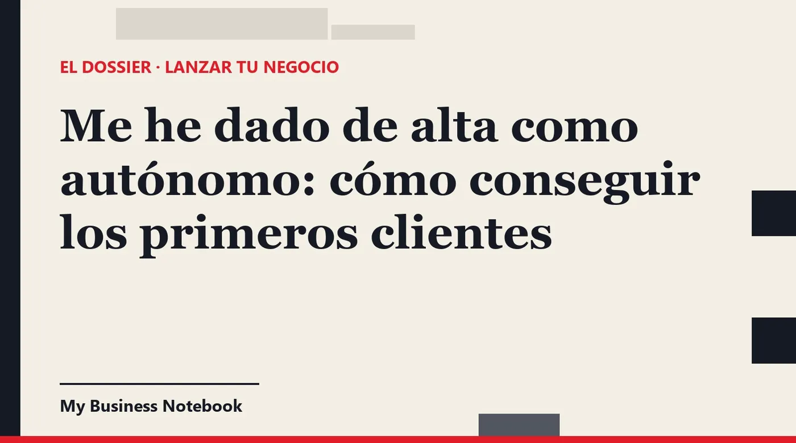

Me he dado de alta como autónomo: cómo conseguir los primeros clientes
Ya tienes el 036 presentado, el alta en la Seguridad Social y la tarifa plana en marcha. Y ahora, el silencio. Darse de alta es un trámite; conseguir clientes es un trabajo, y se aprende. Aquí tienes por dónde empezar, en qué orden, y qué dice la ley en España antes de escribir a nadie.

La respuesta corta
Los primeros clientes de un autónomo casi nunca llegan solos. Salen de tu red, de otros profesionales que atienden a tu mismo cliente y de la prospección que haces tú, con constancia y con un seguimiento ordenado de cada contacto.
La visibilidad en Google ayuda, pero tarda. Por eso el orden que te proponemos es este: primero la gente que ya te conoce, luego las colaboraciones, después la prospección directa, y todo el tiempo un presupuesto claro y una segunda llamada que casi nadie hace.
Darse de alta autónomo por primera vez: lo que ya tienes hecho
Si ya te has dado de alta, has pasado por dos ventanillas. En Hacienda, la declaración censal con el modelo 036, que la Agencia Tributaria ayuda a presentar por internet con su servicio Censos WEB. El modelo 037 ya no existe: la Agencia Tributaria lo suprimió con efectos del 3 de febrero de 2025.
En la Seguridad Social, el alta en el régimen de autónomos (RETA). Ahí es donde se pide la tarifa plana, y solo en ese momento: la Seguridad Social indica que «la solicitud se realizará en el momento de tramitar el alta».
Darse de alta autónomo con tarifa plana: el reloj corre
La cuota reducida que describe la Seguridad Social es de 80 euros al mes durante los primeros 12 meses de actividad, para quien no ha estado de alta como autónomo en los dos años anteriores (tres si ya la disfrutó antes). Consulta el importe exacto que te corresponde en Import@ss, porque la página oficial la presenta para las altas de 2023 a 2025.
Lo importante para este artículo es otra cosa. Esos doce meses baratos son tu ventana para arrancar. Cada mes sin clientes es un mes de cuota pagada sin ingresos, así que la búsqueda de clientes empieza el mismo día del alta, no cuando tengas la web perfecta.
Mis primeros clientes: empieza por la gente que ya te conoce
Tu primer cliente probablemente ya tiene tu teléfono. Antiguos compañeros, jefes, proveedores de tu empresa anterior, amigos con negocio: esa gente confía en ti antes de ver tu web.
- Haz una lista de 50 nombres. No pienses si te comprarán. Apunta a todo el que sepa cómo trabajas.
- Escribe un mensaje personal a cada uno, no un mensaje en grupo. Qué haces ahora, para quién, y una petición concreta: «¿conoces a alguien que necesite esto?».
- Pide recomendaciones, no favores. A mucha gente le cuesta contratarte a ti, pero le encanta presentarte a otro.
- Apunta quién te responde y qué te dice. Dentro de un mes volverás a esa lista.
Aquí no hay problema legal: escribes a gente que te conoce, de tú a tú, sin publicidad masiva. Es la parte más rápida y la que más se olvida por vergüenza.
Colaboraciones: los clientes que ya tienen otros
Busca profesionales que venden a tu mismo cliente, pero no lo mismo que tú. Esa alianza trae clientes durante años y no cuesta dinero.
Algunos ejemplos: una diseñadora gráfica y una imprenta. Un electricista y una empresa de reformas. Una asesora fiscal y un gestor de nóminas. Una fisioterapeuta y un gimnasio del barrio.
Cómo proponerlo sin que suene a venta
- Ve a verlos en persona o llama. Explica en un minuto qué haces y qué tipo de cliente te encaja.
- Ofrece antes de pedir. Mándales tú el primer cliente si puedes. Es la forma más rápida de que te devuelvan el gesto.
- Pon por escrito lo básico si hay dinero de por medio: si hay comisión, cuánto, y quién factura a quién.
Cómo conseguir clientes a través de LinkedIn
Si vendes a empresas, LinkedIn es el sitio donde están los que deciden. Funciona cuando lo usas para conversar, no para soltar folletos.
- Arregla tu perfil primero. El titular dice qué resuelves y para quién: «Diseño la imagen de marca de restaurantes en Sevilla» se entiende; «Creativa apasionada» no.
- Conecta con criterio: diez personas al día que encajan con tu cliente ideal, con una nota breve y personal que diga por qué quieres conectar.
- No vendas en el primer mensaje. Pregunta, comenta sus publicaciones, comparte algo útil. Cuando la conversación lo pida, propón una llamada.
- Publica una vez por semana sobre tu trabajo real: un caso, un error frecuente de tus clientes, un antes y después.
Hay un matiz legal. La LSSI prohíbe la publicidad no solicitada por correo electrónico «u otro medio de comunicación electrónica equivalente». Un mensaje privado lleno de ofertas se acerca a eso. Una conversación en la que la otra persona te pide información, no.
Cómo conseguir clientes nuevos para tu negocio sin saltarte la ley
La prospección directa es lo que más rápido llena la agenda. Pero en España el correo comercial frío tiene reglas estrictas, y conviene conocerlas antes de enviar nada.
Lo que dice la LSSI sobre el correo comercial
El artículo 21 de la LSSI prohíbe enviar comunicaciones publicitarias por correo electrónico que no hayan sido solicitadas o expresamente autorizadas antes por quien las recibe. La excepción es el cliente que ya te ha comprado: puedes escribirle sobre productos o servicios tuyos parecidos a los que contrató.
Además, la ley exige que el mensaje se identifique como comercial, que quede claro quién lo envía y que haya una forma sencilla y gratuita de darse de baja. La AEPD lo recuerda: esa opción debe ofrecerse al recoger los datos y en cada comunicación.
Entonces, ¿cómo hago el primer contacto?
Por teléfono, en persona o conversando en LinkedIn. Una llamada corta y educada, o una visita al negocio, abre la puerta. Cuando la persona te dice «mándame información», ya tienes su permiso para escribirle, y ese correo sí puede llevar tu presupuesto.
- Elige una cartera pequeña: un tipo de cliente en una zona. «Clínicas dentales de Zaragoza» es una lista; «empresas» no.
- Prepara 30 contactos por semana con su teléfono y el nombre de quien decide, si puedes.
- Ten un guion de tres frases: quién eres, qué problema resuelves a negocios como el suyo, y una pregunta.
- Apunta cada contacto en una tabla: por contactar, contactado, en conversación, ganado, descartado.
Si llamas a particulares, ten en cuenta que existe la Lista Robinson, a la que la AEPD remite a quien no quiere recibir llamadas comerciales. Con empresas, la llamada profesional y breve es la vía habitual.
Plataformas y portales: útiles al principio, no para siempre
Los portales donde el cliente publica lo que necesita (reformas, diseño, traducción, clases, programación) te dan encargos sin tener red. A cambio suelen cobrar una comisión o una cuota, y compites en precio con mucha gente.
Úsalos para conseguir tus primeros trabajos y tus primeras opiniones. Luego intenta que esos clientes vuelvan a ti directamente para el siguiente encargo, siempre que las condiciones de la plataforma lo permitan. Léelas antes de aceptar.
Para trabajar con la Administración, las licitaciones públicas también son una vía. Suelen pedir más papeles y más paciencia, así que dejarlas para cuando tengas algo de rodaje es razonable.
Presupuestos que se cierran y seguimiento que nadie hace
Muchos autónomos pierden clientes que ya estaban casi ganados. El motivo no suele ser el precio: es que mandaron el presupuesto y no volvieron a llamar.
Un presupuesto que se entiende en un minuto
- Empieza por el problema del cliente, con sus palabras, antes que por tus tarifas.
- Precio cerrado y claro, IVA indicado, qué incluye y qué no. Si puedes, dos opciones: básica y completa.
- Plazo y validez: cuándo empiezas, cuánto tardas y hasta qué fecha vale el precio.
- Un siguiente paso: «si te encaja, respóndeme a este correo y lo reservamos».
El seguimiento: tres toques y basta
Llama o escribe a los tres o cuatro días para resolver dudas. Si no hay respuesta, un segundo contacto a la semana siguiente. Un tercero, corto, para cerrar: «¿lo dejamos para más adelante?».
Aquí el cliente ya te ha pedido el presupuesto, así que escribirle sobre él es parte de la conversación que abrió. Lo que no debes hacer es meterlo después en boletines comerciales sin su permiso.
Cómo conseguir buenos clientes (y no solo clientes)
Al principio cuesta decir que no. Pero un cliente que regatea cada factura, paga tarde y cambia el encargo a mitad te quita las horas que necesitas para buscar a los buenos.
- Define tu cliente ideal con tres rasgos: tamaño, sector y un problema concreto que tú resuelves bien.
- Pide una parte por adelantado en los encargos grandes. El buen cliente lo entiende.
- Pregunta a tus mejores clientes dónde te encontraron y a quién más conocen como ellos. Ahí está tu siguiente lista.
Cómo dar a conocer mi negocio mientras tanto
Todo lo anterior funciona mejor si, cuando alguien busca tu nombre, encuentra algo serio. Antes de contestarte, casi todo el mundo te busca en Google.
Crea tu Perfil de Empresa en Google, que es gratuito, y rellénalo entero. Te lo contamos paso a paso en cómo aparecer en Google Maps con tu negocio gratis. Después pide la reseña a cada cliente contento con un enlace o un QR, como sugiere Google.
Google prohíbe ofrecer descuentos o regalos a cambio de reseñas: lo considera interacción falsa. Pide la opinión, sin premio.
La herramienta para buscar clientes y hacer el seguimiento
Todo esto se puede llevar con una hoja de cálculo y mucha disciplina. En la práctica, la lista de contactos se queda a medias y los seguimientos se olvidan en la tercera semana. Por eso recomendamos Kaptor, una plataforma pensada para negocios que empiezan.
Kaptor
Kaptor junta en un mismo espacio la búsqueda de clientes y la visibilidad:
- Prospección: empresas por sector y por zona (ciudad, provincia u otro país), con sus datos de contacto, ordenadas por IA de la más caliente a la más fría.
- Embudo de seguimiento: cada contacto pasa por «por contactar», «contactado», «en conversación», «ganado» o «descartado». Sabes a quién llamar hoy.
- Correos y seguimientos: salen desde tu propia dirección o tu dominio, con recordatorios automáticos, baja incluida y respuestas centralizadas. Nada se envía sin tu validación, así que decides tú a quién escribes y cuándo.
- Visibilidad: te da de alta en los directorios que cuentan para tu país y tu sector (más de 120 referencias), con los mismos datos en todas partes y avisos cuando uno se queda desactualizado.
- Perfil de Empresa en Google y web: te ayuda a crear o reclamar la ficha y a pedir reseñas. Si no tienes web, genera una con formulario de contacto; si ya la tienes, un blog que te trae visitas.
Puedes crear tu espacio gratis para probarlo. Después, los planes empiezan en 89 $ al mes (Starter), con Growth a 149 $ y Agency a 499 $, sin permanencia.
¿Te encuentran cuando te buscan?
La auditoría gratuita de Kaptor busca tu negocio en los directorios de tu país y te enseña en segundos dónde estás y dónde no. Sin tarjeta y sin registro.
Hacer mi auditoría gratisPara seguir leyendo: antes de tu primera llamada, asegúrate de salir en el mapa con nuestra guía para aparecer en Google Maps gratis.
Preguntas frecuentes
¿Cómo conseguir clientes siendo autónomo?
Empieza por tu red (una lista de 50 personas que conocen tu trabajo), busca colaboraciones con profesionales que atienden a tu mismo cliente y prospecta cada semana una lista pequeña y concreta. Manda presupuestos claros y haz siempre el seguimiento.
¿Puedo enviar correos comerciales a empresas que no me conocen?
En principio no. El artículo 21 de la LSSI prohíbe la publicidad por correo electrónico no solicitada o expresamente autorizada antes, salvo que ya sea tu cliente y le hables de servicios parecidos. Haz el primer contacto por teléfono, en persona o conversando en LinkedIn, y escribe cuando te pidan información.
¿Cómo conseguir clientes a través de LinkedIn?
Perfil claro (qué resuelves y para quién), conexiones con una nota personal, conversación antes que venta y una publicación semanal sobre tu trabajo real. No uses los mensajes privados para mandar ofertas que nadie ha pedido.
¿Cuánto es la tarifa plana al darse de alta como autónomo?
La Seguridad Social describe una cuota reducida de 80 euros al mes durante los primeros 12 meses para quien no ha estado de alta en los dos años anteriores. Se pide en el momento del alta. Comprueba el importe vigente en Import@ss.
¿Todavía existe el modelo 037?
No. La Agencia Tributaria lo suprimió con efectos del 3 de febrero de 2025. El alta censal se hace ahora con el modelo 036, con ayuda del servicio Censos WEB.
¿Cómo dar a conocer mi negocio sin gastar dinero?
Crea y completa tu Perfil de Empresa en Google, que es gratuito, pide reseñas a tus clientes contentos sin ofrecer nada a cambio, y avisa a tu red y a los negocios complementarios de tu zona.
Fuentes oficiales
- Seguridad Social: nuevo sistema de cotización para autónomos : cuota reducida de 80 euros, requisitos y solicitud en el momento del alta.
- Agencia Tributaria: modelo 036, declaración censal : alta en el censo de empresarios y profesionales y servicio Censos WEB.
- Agencia Tributaria: supresión del modelo 037 : suprimido con efectos del 3 de febrero de 2025.
- BOE: Ley 34/2002 de servicios de la sociedad de la información (LSSI) : artículos 20 y 21 sobre comunicaciones comerciales por correo electrónico.
- AEPD: publicidad no deseada : relación contractual previa, derecho de oposición y Lista Robinson.
- Ayuda de Perfil de Empresa en Google: añadir o reclamar tu empresa : la ficha es gratuita.
- Ayuda de Perfil de Empresa en Google: reseñas : pedir reseñas con enlace o QR; incentivos prohibidos.